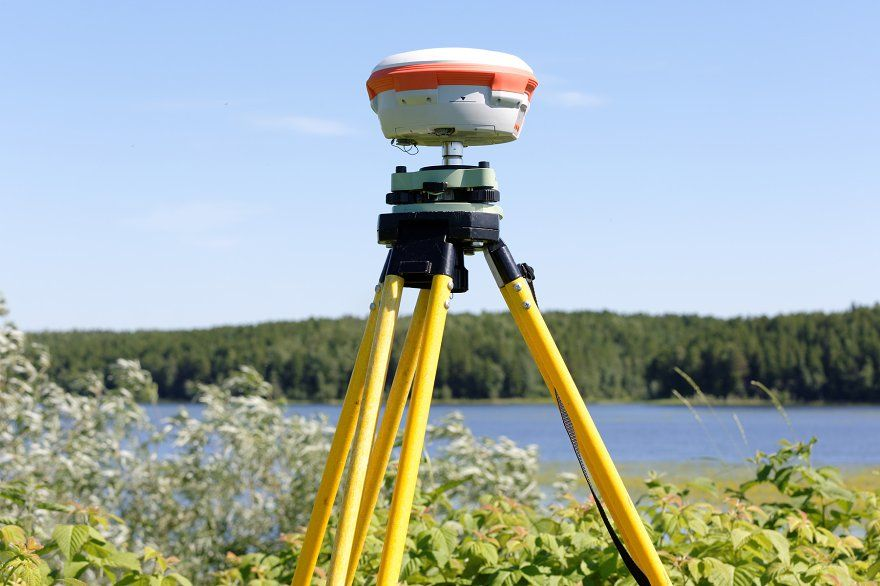
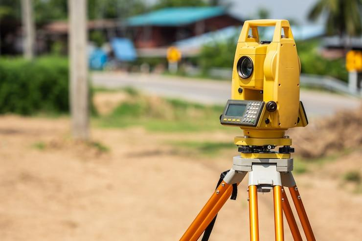

Precisão, segurança e regularização do seu imóvel com tecnologia GNSS RTK, Drone e Estação Total.
Solicitar Orçamento GratuitoA MTA (Marcelino Topografia e Agrimensura) é especializada em topografia e agrimensura, atuando com precisão, responsabilidade e tecnologia de ponta. Utilizamos equipamentos modernos, como GNSS RTK, estação total e drones, garantindo levantamentos confiáveis e de alta qualidade. Nosso trabalho é pautado pelo comprometimento, atenção aos detalhes e busca constante pela excelência, oferecendo soluções eficientes para cada projeto. Além disso, contamos com apoio de assessoria jurídica e engenharia florestal, garantindo suporte completo e multidisciplinar.
Determinação precisa da área real do imóvel.
Regularização conforme INCRA e SIGEF.
Implantação precisa de limites de propriedades.
Divisão técnica e legal de terrenos.
União de imóveis em uma única matrícula.
Plantas e memoriais para processos legais.
Mapeamento completo de áreas e estruturas.
Regularização de imóveis urbanos.


Advogado especialista em Direito Imobiliário
✔ Suporte jurídico com serviços de regularização e documentação imobiliária.
Mais Informações
Engenheiro Florestal
✔ Inventário florestal (medição e análise de árvores e áreas florestais)
✔ Manejo florestal sustentável (planejamento de corte, replantio e conservação)
✔ Licenciamento ambiental e estudos ambientais
✔ Recuperação de áreas degradadas (reflorestamento e recomposição de vegetação)
✔ Geoprocessamento e uso de imagens de satélite para análise de áreas
✔ Planejamento de plantios comerciais (eucalipto, pinus e espécies nativas)
✔ Perícias e laudos ambientais e florestais
✔ Carbono florestal e projetos de crédito de carbono
Atuamos em Curitiba e região metropolitana com serviços de topografia e agrimensura.